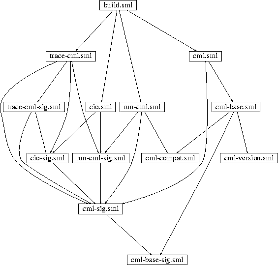
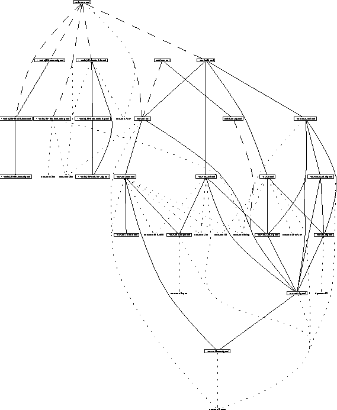

CM
A Compilation Manager for SML/NJ
User Manual
Matthias Blume
Department of Computer Science
Princeton University
CM is the compilation manager for Standard ML of New
Jersey [MTH90,AM91]. It is loosely based on its
precursor SC [HLPR94b,HLPR94a] and
provides functionality similar to the well-known UNIX-program
make [Fel79].
CM simplifies the maintenance of large software systems by subdividing
them into a hierarchy of groups and libraries. Groups and
libraries--collectively called entities--consist of individual SML
source files, other groups, and other libraries.
Unlike make, which is meant to be a general-purpose tool not
aimed at a specific language, CM provides automatic dependency
analysis and a form of separate compilation known as cutoff
recompilation [ATW94].
The compilation manager uses the hooks provided by SML/NJ's open
compiler [AM94] and translates SML sources to produce
binary object files called binfiles. The SML sources themselves can
be the result of executing other programs, which is accounted for by
CM's tools mechanism. Examples of such tools are the version control
system RCS [Tic85], the parser-generator
ML-Yacc [TA90], and the literate programming tool
noweb [Ram94].
One important use for CM is the maintenance of SML/NJ's compiler,
which is not quite the same as maintaining other SML
programs [App94]. For that reason we offer a special
interface, which facilitates controlling batch compilation,
bootstrapping, and the process of retargeting the compiler to a
different machine architecture.
The basic function of CM is to perform separate compilation, automatic
dependency analysis, and selective recompilation for any SML program
consisting of more than one compilation unit. But when the number of
compilation units is large, it becomes increasingly important
that they themselves can be grouped together and that explicit export
interfaces can be used to control namespaces. When there are many
groups, then one may want to organize them into supergroups, and so
on.
Figure:
Dependency hierarchy of CML.Separate compilation can be used to break large programs into smaller
pieces and to compile these smaller compilation units one at a time.
But in most cases we cannot compile a compilation unit in complete
isolation: The result of the compilation depends on both the source
file itself and on the result of compiling other units.
Here trace-cml.sml depends on cml-sig.sml, which is
indicated by the presence of directed paths from the former to
the latter. In fact, the graph contains as many as five such paths,
although each one of them would be enough for a dependency to exist.
|  |
Figure 1 shows the dependency graph for CML's
sources. CML [Rep91] is implemented as a regular SML/NJ
program. Without the help from a compilation manager one would have
to invoke a number of use commands--one for each source
file--in order to load CML into SML/NJ. Of course, the order in
which the commands are issued is important here, because identifiers
can only be referred to after they are defined. Therefore, since
run-cml.sml refers to objects defined in cml-compat.sml the
former must be loaded after the latter. More precisely, the sequence
of use commands has to be in topological order with respect to
the dependency graph. Normally the programmer does not have the
benefit of looking at a diagram like figure 1; the
task of manually maintaining sources in topological order is tedious
and error-prone.
One feasible ordering of CML's sources is
app use
["cml-base-sig.sml", "cml-sig.sml", "run-cml-sig.sml",
"cio-sig.sml", "trace-cml-sig.sml", "trace-cml.sml",
"cio.sml", "cml-compat.sml", "run-cml.sml",
"cml-version.sml", "cml-base.sml", "cml.sml", "build.sml"];
but clearly there are many others as well. For example,
cml-version.sml could be moved further to the front of this list
without harm. CM's dependency analysis automates the task of
determining a feasible ordering.
But not every source depends on every other source. In fact, we hope
that in a well-structured project there are relatively few
interdependencies between source files. Therefore, it is usually
possible to perform selective recompilation when some but not all
source files have been changed.
The UNIX program make uses a policy where not only the
source that has been altered will be recompiled but also all of its
predecessors in the dependency graph as well. This mechanism can be
overly pessimistic, because changes to one file might not have an
actual influence on subsequent compilations of dependent units. CM
also recompiles a source whenever its own time stamp changes, but in
addition it compares the outcome with the result of previous
compilations of the same unit. Recompilation is terminated as soon as
changes no longer propagate any further.
Suppose we modify cml-version.sml without changing its
interface. CM will recompile this unit and be done, because no
further work is necessary, while make would also process three
other files--cml-base.sml, cml.sml, and build.sml.
The easiest way of getting started using CM is by treating the entire
program--the ``system''--as one single group. A group in its most
basic form is just a collection of SML source files, which must be
listed in an entity description file.
Even though there will be more on syntax and semantics of entity
description files, for now it is enough to start with two keywords:
Group and is, followed by a list of source file names.
For example, if we want to put main.sml, table.sig, and
table.sml into a single entity, then we must create a file
sources.cm containing:
Group is
main.sml (* the application code *)
table.sig (* interface to `table' abstraction *)
table.sml (* implementation of `table' abstraction *)
As shown in this example it is possible to use SML-style comments
within entity description files.
Once sources.cm has been set up we can start CM, which is
usually done by running the command sml-cm. This begins an
interactive SML/NJ session and provides CM's functionality.
The command
CM.make ();
will now analyze the dependencies among components of the system,
determine a feasible ordering of (re-)compilation steps, and continue
to carry them out as necessary. All CM commands are just SML
expressions.
Without placing certain restrictions on SML source code it is a
provably hard problem to perform reliable dependency analyses.
Therefore, CM can only deal with SML source code that obeys
the following two additional rules:
- No symbol can be defined (at top level) in more than one source
of the same entity (group or library).
- The use of open is not allowed at the top level.
It must also be noted that only occurrences of structures, signatures,
functors, and functor signatures are tracked by CM's dependency
analysis. This in itself does not impose another restriction on the
admissible input language, but it bears the danger of missing certain
dependencies. Good programming style demands keeping all other
definitions inside structures and signatures--in which case there
will be no problem.
The analyzer does not make any attempt to take side-effects into
account. Consider the following situation:
File a.sml defines:
(* file a.sml *)
structure A = struct
val r = ref 0
end
Execution of b.sml modifies the ref cell:
(* file b.sml *)
structure B = struct
val _ = A.r := 1
end
Now, if c.sml refers to A.r as well - which value should
it see?
(* file c.sml *)
structure C = struct
val x = !A.r
end
Either 0 or 1 would be legal, and there is no way to
prefer one over the other.
Care must be taken with top-level side effects, because CM does not
try to address this problem. It is up to the programmer to make sure
that the ordering of side-effects is either unambiguous or does not
matter. In the example above, to make sure that b.sml is
compiled and executed before c.sml, one could add an otherwise
unnecessary reference to structure B to the code in c.sml:
(* file c.sml *)
structure C = struct
local
structure B = B
in
val x = !A.r
end
end
Instead of using a single group one can divide a system into several
groups and arrange them into a group hierarchy. There are two main
motivations for doing so:
- 1.
- to make large systems more manageable by grouping related source
files together
- 2.
- to relax the restriction of only being allowed to have one
definition for every top-level symbol
The second point deserves some elaboration: Normally--within one
entity--we are forced to have at most one top-level definition for
each symbol. Without this restriction there could be ambiguities that
prevent automatic dependency analysis from succeeding.
However, the hierarchy of groups must be specified by the programmer
explicitly. Therefore, there is no problem with having the same symbol
defined in different groups or libraries, because the partial ordering
for them is known in advance; CM does not have to infer it.
In SML it is not allowed for definitions to form cycles across module
boundaries. In particular, structure A from a.sml cannot
refer to structure B in b.sml, if at the same time
structure B refers to structure A. CM enforces this rule even
if there is a sub-entity providing definitions for either A or
B. This would allow one to break the cycle, but in general it is
not possible to unambiguously decide where.
There is one exception. Constructions like
structure A = A
or variations thereof, which seem to form cycles of length one, are
not considered cyclic definitions. The use of A is
not in the scope of the definition of structure A. There is no
way of changing this situation by reordering source files, because
both use and definition are in the same compilation unit. Therefore,
CM will treat the use of A as a reference to some
definitions imported from a sub-entity.
A group whose description file has been mentioned in some other
entity's description becomes a subgroup of that other entity, which is
then called the client of the group. Sources of the client can refer
freely to any of the symbols defined within and exported by the
subgroup. However, the client can also provide new definitions for
any of the subgroup's symbols, thereby masking the original one.
Imported symbols are available for re-export by the client. The exact
rules which govern re-export will be described later after libraries
and export filters have been introduced. So far we only deal with
groups and subgroups without export filters. In this simple but
certainly common scenario all imported definitions will always be
re-exported--with the exception of those that have been masked. In
effect, all non-masked definitions will ultimately become available at
the interactive top level.
To turn a group into a client of some other group one only needs to
mention the subgroup's description file somewhere among the list of
sources of the client. From now on we will refer to this list as the
list of members. Some of the members are sources, others are
descriptions for sub-entities. Usually CM will automatically identify
description files in its member list by looking at the names: those
ending in .cm are treated as names of CM-style entity
description files. Relative filenames are regarded as being relative
to the directory the description file appears in.
Suppose we have a group consisting of a.sml and b.sml,
which needs to refer to a subgroup containing util/c.sml and
util/d.sml. In this case we could create a description file
util/sources.cm with:
Group is
c.sml
d.sml
and another one--called sources.cm--specifying:
Group is
a.sml
b.sml
util/sources.cm
Sometimes a member file is not a description file and also does not
contain SML source code. Such a file requires a different kind of
processing before CM's analyzer can understand them. The special
processing is done by the built-in tools facility of CM, which in many
cases will invoke auxiliary programs for this purpose. For
example, an ML-Yacc source file parser.grm will first be fed to
ml-yacc, which produces two files: parser.grm.sig and
parser.grm.sml. These will then be treated as SML source files.
CM tools can be combined into cascades. Instead of specifying
parser.grm one can use the corresponding RCS archive
parser.grm,v instead. CM will first run the co command to
check out a copy of parser.grm, then feed the result into
ML-Yacc to finally obtain parser.grm.sig and
parser.grm.sml.
Normally the decision of which tool to pick is made based on the name
of the source file, but in general it can also be guided by explicit
specifications in the description file: Any member name can optionally
be followed by a colon and the name of a member class.
Currently CM knows about the classes Sml, CMFile,
SCGroup, SCLibrary, MLLex, MLYacc,
MLBurg, RCS, and Noweb. Class names are case-insensitive.
Some class names are special to CM--they correspond to
classes of members which do not need to be processed by tools but
which can be analyzed directly. Those classes are
- Sml:
- plain SML sources
- CMFile:
- CM-style entity descriptions
- SCGroup:
- SC-style group descriptions
- SCLibrary:
- SC-style library descriptions
Table 1:
Default mapping from name suffixes to member classes
| .sig .sml .fun |
Sml |
| .grm .y |
MLYacc [TA90] |
| .lex .l |
MLLex [AMT89] |
| .burg |
MLBurg [GG93] |
| ,v |
RCS [Tic85] |
| .cm |
CMFile |
| .sc |
SCGroup |
| .nw |
Noweb |
Since CM tries to guess the member class based upon the member's name
it will rarely be necessary to specify class names explicitly.
Table 1 shows the list of recognized file name
suffixes and their corresponding class names. (Not all supported
suffixes are shown in this table. The unlisted ones embody SC legacy
and will eventually disappear.)
Every tool is associated with
- a processor
- a rule for determining target file names from the name of the
source file
- a set of conditions under which the processor is to be invoked
The tools interface to CM allows for the seamless addition of new
tools by writing a few lines of Standard ML (see section 9).
Table 2 shows the specifications for the tools which are
available by default. The out-of-date condition mentioned in
this table refers to the situation where at least one of the targets
is either missing or older than the source.
Table 2:
Available tools
| member class |
processor |
source |
targets |
conditions |
| MLYacc |
ml-yacc |
file |
file.sig |
out-of-date |
|---|
| |
|
|
file.sml |
|
| MLLex |
ml-lex |
file |
file.sml |
out-of-date |
|---|
| MLBurg |
ml-burg |
file.burg |
file.sml |
out-of-date |
|---|
| |
|
file |
file.sml |
|
| RCS |
co -q |
file,v |
file |
target missing |
|---|
| |
|
RCS/file,v |
file |
|
| Noweb |
notangle |
file.nw |
file.sig |
out-of-date |
|---|
| |
|
|
file.sml |
|
| |
|
file |
file.sig |
|
| |
|
|
file.sml |
|
| |
|
root@file.nw |
root |
|
| |
|
root@file |
root |
|
Any entity can be equipped with an export filter. The filter, which
is simply a list of symbols, restricts the set of definitions
exported. Entities with export filters will export definitions for
precisely the symbols listed, no matter whether they are defined in the
entity itself or in one of the sub-entities that it is a client of.
Export filters can be used to good effect in the case of libraries,
where they are mandatory. But even for groups they are often useful.
Symbols used for the communication between individual sources of an
entity but not meant to be visible from outside can conveniently be
hidden this way. Furthermore, export filters enable us to reduce the
chance of clashes between different definitions for the same symbol.
Another reason for using export filters is to restrict the set of
symbols that will become visible at the interactive top level.
During the process of recompilation CM always combines just the
minimal set of static environments sufficient to build a suitable
compilation environment for each given SML source. By specifying
export filters it is possible to further decrease the size of the
compiler's internal data structures, which is something that can also
contribute to reduced memory bandwidth and increased compilation
speed.
An export filter is specified as a list of symbols. It appears
between the keywords Group (or Library) and is.
Since in SML we distinguish between symbols of different name spaces
we must write structure struct-sym for a structure symbol,
signature sig-sym for a signature symbol, functor
fct-sym for a functor symbol, and funsig fsig-sym
for a functor signature symbol.
A group description with export filter could therefore look like this:
Group
structure Table
signature TABLE
structure Main
functor A
funsig A
is
main.sml
a/fct.sml
a/fsig.sml
table/sources.cm
RCS/parser.grm,v
Entities are either groups or libraries. In many ways libraries
are very similar to groups: both of them have a list of members, both
of them contain SML sources and input for tools, and both of them can
be clients to sub-entities. The major difference between groups and
libraries becomes apparent when we look at the terms and conditions
under which symbols are exported.
If an entity imports a symbol from a group, then the corresponding
definition (besides being allowed to be masked) has the same status
as any definition coming directly from a source of the client. In
particular, it will be exported to clients of the client unless hidden
by the client's export filter.
Symbols imported from libraries can be referred to from within sources
of the client, but they will not automatically be re-exported to
clients of the client. (The client may still provide new definitions,
therby masking the ones that are imported.) Since libraries never
appear at the root of the entity hierarchy this implies that
definitions from libraries will not become visible at the interactive
top level. (The root entity is always treated as if it were a
group--regardless of what the description says. This way the
programmer can force a library to be compiled, or to be loaded into
the top-level environment.)
Of course, this behavior can be modified: even symbols from libraries
are subject to re-export provided they have been mentioned in the
client's export filter explicitly.
Here is the precise rule which governs symbol export:
- An entity with export filter
- exports all symbols listed in the
filter regardless of their origin.
- A group without export filter
- exports all symbols defined in
sources of the group and all symbols defined in subgroups of the group
unless these imported symbols have been redefined and therefore are
hidden.
- A library without export filter
- is normally not legal.
However, for the purpose of backward-compatibility with SC it is
possible to use SC-style libraries which do not have export
filters. In this case the library exports all symbols defined in
sources of the library and all non-masked symbols defined in
subgroups of the library. (This coincides with the rule for
groups without export filter.)
If a symbol's definition is not used by any of the clients of a
library, then it cannot be accessed at all. CM will ignore the
members of libraries whose exported definitions are not accessed; they
will not be loaded and they will not be linked with the rest of the
system. Therefore, they behave in a way similar to members of
libraries for other languages.
A CM-style library description file looks almost exactly like a
group description file. The only difference is that the initial
keyword Group is replaced with Library.
CM-style description files can also provide the functionality of a
symbolic link. Instead of actually listing the specification of a
group or a library a description can ``point to'' another description.
A file containing only
Alias name
behaves exactly like the description file identified by
name. To locate the aliased description, CM applies the same rules
that are also used to find subgroups of groups. If name is a
relative pathname, then CM will first try to find it in the directory
that contains the alias. Upon failure it then consults an internal
search path. See section 8.8 for details.
The maximum nesting depth for aliases is limited to 32.
The full syntax of description files in BNF is:
description-file group-description | library-description | alias
group-description Group [ export-filter ] is member-list
library-description Library export-filteris member-list
export-filter export-symbol { export-symbol }
export-symbol name-space Identifier
name-space structure | signature | functor | funsig
member-list member { member }
member Pathname [ : Class ]
alias Alias Pathname
Identifier, Pathname, and Class are lexical classes
consisting of non-empty strings without white space, colons,
parentheses, or semicolons. Comments in the style of
Standard ML (text between balanced pairs of (* and *)) or
in the style of Scheme (text extending from a semicolon to the end of
the line) are permitted. They count as delimiters like white space.
The class Pathname also includes strings of characters enclosed
in double-quotes ("). No character except "
has a special meaning there; a literal " that is to
appear in a path name must be written twice.
Normally, pathnames are parsed according to CM's own ``standard''
interpretation. Forward- or back-slashes (/ and
\) are used to separate directory names from names of files
and subdirectories. Pathnames that start with a slash are absolute
pathnames, others are relative to the directory that contains the CM
description file.
These conventions are independent of the underlying operating system
and should work wherever there is a hierarchically structured file
system.
Pathnames specified using a string enclosed in double-quotes are
considered native and will be interpreted according to the underlying
operating system's conventions. Therefore, such pathnames are
inherently non-portable. However, this syntax is mainly used in
situations that are not portable to begin with: explicit volume
labels under MS-DOS, non-standard characters in file names, and so on.
The recommended strategy for writing portable CM descriptions is to
exclusively use relative pathnames in CM's standard syntax. By
relying on CM's built-in search path, libraries in central locations
(which would normally require the use of absolute pathnames) can be
named using simple file names.
When reading a description file CM applies a simple, C-like
preprocessor that allows for conditional compilation. Currently there
is no way to ``define'' symbols using preprocessor syntax; the
conditionals are tested with respect to an environment defined in CM
itself. However, there are CM commands lookup, define,
undef, and undefall in structure CM.SymVal that can
be used to modify that environment.
CM's preprocessor syntax is very similar to that used by the
C-preprocessor: Lines that start with # are treated specially.
line nonpreprocline
preproc
nonpreprocline line not starting with #
preproc if { line } elif-opt else-opt endif
error
if beginning-of-line # if expression end-of-line
elif-opt { elif { line } }
elif beginning-of-line # elif expression end-of-line
else-opt [ else { line } ]
else beginning-of-line # else end-of-line
error beginning-of-line # error text end-of-line
Example:
Group is
a.sml
b.sml
# if (SMLNJ_VERSION >= 109 || defined(structure SMLofNJ) )
util.sml
# elif (SMLNJ_VERSION < 108)
# error This version of SML/NJ is too old to support this software.
# else
util-workaround.sml
# endif
Expressions denote integer quantities; is used for for false and
non-zero values for true.
There are four forms of atomic expressions:
- 1.
- Integer literals evaluate to the corresponding integer.
- 2.
- A symbol evaluates to the value bound to that symbol--or to
if the symbol is not defined.
- 3.
- The expression defined(symbol)
evaluates to 1 if symbol is defined, or to if it is not
defined.
- 4.
- The forms: defined(signature sigid),
defined(structure strid), defined(functor
fctid), and defined(funsig fsigid)
test to see if the given ML module is defined in the base environment.
Depending on architecture, operating system, and configuration one
symbol out of each of the following groups will be predefined to 1:
- Operating system
OPSYS_UNIX
OPSYS_WIN32
OPSYS_MACOS
OPSYS_OS2
- Architecture
ARCH_SPARC
ARCH_MIPS
ARCH_ALPHA
ARCH_X86
ARCH_HPPA
ARCH_RS6000
ARCH_POWERPC
- Byte order
BIG_ENDIAN
LITTLE_ENDIAN
- Size of an ML value (pointer size)
SIZE_32
SIZE_64
Additionally, in version xxx.yy of the compiler
SMLNJ_VERSION will be set to xxx, and
SMLNJ_MINOR_VERSION evaluates to yy.
Expressions are formed using a variety of binary operators, all of
which are left-associative. Operators are listed with increasing
precedence. Those that appear on the same line have equal binding
strength:
||
&&
== !=
< <= > >=
+ -
* /
Logical disjunction || and conjunction && are
short-circuiting operations. The unary operators for logical and
numerical negation are ! and -,
respectively. Parentheses can be used for grouping.
With autoloading enabled the command
CM.autoload' "util.cm";
makes all definitions exported from the entity described by
util.cm available at the SML top-level. However, it does that
without actually compiling or loading anything. CM will then monitor
code entered at top level. If it finds that a symbol exported from
util.cm is being used and that the definition for that symbol
has not already been supplied earlier, then it will calculate the
minimal set of sources that need to be loaded in order to provide the
desired definition.
val autoloading: bool option -> bool
This function is used for enabling and disabling the autoloader. With
an argument of NONE one can query the current status without
actually changing it. The function always returns the previous
setting.
val autoload: unit -> unit
val autoload': string -> unit
These two functions behave like make and make', except they do not
actually load any module. Later, when CM sees a use of some symbol
that is exported by the entity (only structures, signatures, functors,
and functor signatures are tracked), then all necessary compilation
units will automatically be linked into the running system.
val autoList: unit -> string list
A call to autoList returns a list of all entities that are
currently registered for autoloading. The internal registry of such
entities can be erased by invoking clearAutoList:
val clearAutoList: unit -> unit
CM uses a variety of caches to speed up its analysis and recompilation
steps. In-core caches provide fast access to information as long as
we do not terminate the CM session. The ambient file system provides
a second level of caches, which is used to remember the results of
expensive operations from one session to the next.
All cache files are stored in subdirectories of a directory called
CM, which itself appears in the directory where the corresponding
source files are located.
The most important kind of cache is the binfile, because it enables us
to avoid compiling sources over and over. In addition, during an
ongoing session compilation results are partially kept in main
memory. This greatly reduces file system traffic.
Binfiles are located in a subdirectory whose name is derived
from the name of the target machine architecture and the flavor of
operating system running on that platform.
Table 3 shows the architectures which are currently
supported together with their associated binfile directory names.
The binfiles themselves use the suffix .bin, which is simply
glued to the end of the respective source file name.
Example: On a Sparc runnning some form of UNIX the binfile for
u/a.sml is u/CM/sparc-unix/a.sml.bin.
Table 3:
Supported architectures and associated binfile directory names
| Architecture |
binfile directory |
| DEC Alpha (32 bit) |
CM/alpha32-os |
| Sparc |
CM/sparc-os |
| MIPS (big endian) |
CM/mipseb-os |
| HP-PA |
CM/hppa-os |
| IBM RS6000 |
CM/rs6000-os |
| Intel x86 |
CM/x86-os |
| bytecode |
CM/bytecode-os |
Dependency analysis is also expensive, because it requires parsing
source files. However, very little information taken from each source
is necessary to drive the analysis. Therefore, CM extracts this
information and caches it both in main memory and in the file system.
The files used for this purpose are called dependency files. They are
stored in a subdirectory CM/DEPEND. For example, the declfile
for u/a.sml will be u/CM/DEPEND/a.sml.
Write errors on declfiles are ignored. When CM encounters an error
while writing such a cache file it only keeps the corresponding
in-core information.
In the presence of caches it is possible to overcome the absence of
source files as long as the contents of those caches are usable. In
particular, if both the dependency file and the binfile are present,
then CM might not need to consult the corresponding source file at
all.
However, there are situations where the source must be consulted
regardless of whether the binfile exists or not, because the binfile
also depends on the environment that was in effect when the source was
compiled. This environment was the result of compiling the source's
ancestors in the dependency graph. Changes in the compilation
environment also require the source to be recompiled.
A stable entity is one whose development has (tentatively) come to
some conclusion. If we do not expect an entity to change in the near
future, then we may decide to stabilize it. Examples of stable
entities are central libraries, which are installed and maintained by
the system administator.
After an entity has been stabilized we can be sure that binfiles will
always be valid. The process of stabilization also creates a special
version of a dependency file--the stablefile--which contains a
summary of what would have been stored in per-source dependency files.
When CM encounters a stablefile it assumes the entity to be stable.
It will not be necessary for any of the sources to be present. Not
even individual dependency files are necessary anymore. Only
stablefile and binfiles are required.
For stable entities CM avoids most of its usual activity in the
ambient file system. On computers with comparatively slow access to
the file system this can considerably improve performance. On many
systems it will make no difference.
The name of the stablefile is derived from the entity's description
file name. A rule very similar to the one used for binfiles is used.
For example, on a Sparc-based UNIX system the stablefile for an
entity described by u/sources.cm will be
u/CM/sparc-unix/sources.cm.stable.
The main functionality of CM can be accessed through members of
structure CM. Earlier we saw an example of that when we
described the CM.make() command. This section will
give a complete description of items in structure CM.
Most actions of CM are driven by the result of some dependency
analysis. In order to perform such an analysis it is necessary to
know the root entity of the hierarchy to be analyzed. The explicit
argument used by many functions for naming the root description file
is a string. Normally it will be considered a CM-style description
file except if it ends in .sc, in which case it will be treated
as an SC-style description.
Most of the time we can rely on built-in defaults. All functions in
the CM structure that take an explicit root description as one
of their arguments have a counterpart without such a parameter. The
counterpart implicitly uses an internal default parameter of the form
!rootfile
The rootfile reference cell is not directly accessible, but
its value can be set via
val set_root: string -> unit
Normally rootfile contains "sources.cm", unless the
operating system environment variable CM_ROOT is set, in which
case its value will be used. Note, that !rootfile is always
treated as a CM-style description file--regardless of its name.
The names of all functions taking explicit string arguments end
with an apostrophe. Names of the corresponding set of functions,
which make use of the default, are almost the same--they just omit
the trailing apostrophe. Example:
CM.make ();
is roughly equivalent to
CM.make' (!rootfile);
We will always discuss both versions of these functions together in
order to avoid unnecessary repetition.
val make': string -> unit
val make: unit -> unit
val recompile': string -> unit
val recompile: unit -> unit
CM.recompile() analyzes the system and performs all necessary
recompilation steps. A recompilation step is necessary, if one of
the following is true:
- the binfile is missing
- the binfile is older than its source file
- a file that this source depends on has been recompiled and
CM has discovered that the new version of the ancestor is not
compatible with the existing binfile
The last point is important: Unlike make in UNIX, CM is
often able to avoid recompiling certain units even if their ancestors
had been recompiled.
If the result of the ancestor's compilation is still compatible with
the existing binfile, then no further action is necessary. In
particular, just touching a file does not cause a recompilation
of the entire system. Also, if a change to a source file does not
change the interface (the static environment) exported by the
compilation unit, then it will not trigger subsequent recompilations
of dependent files. Such a behavior is sometimes referred to as
cutoff recompilation.
CM.recompile() does not execute the code of any of the units
and does not introduce any new bindings to the interactive top level.
Furthermore, it does not keep compiled code in main memory to avoid
wasting resources.
CM.make() performs the same analysis and recompilation steps
which would have been performed by CM.recompile(). In addition
to that it executes the code in all units (i.e., not only the
ones which needed to be recompiled). If everything went without
error, then it will also augment the interactive top level with new
bindings for the symbols exported by the system.
Obviously, when faced with an error during one of the compile steps,
CM cannot proceed with compiling other files that depend on the one
with the error. However, this does not affect unrelated branches of
the dependency graph. Therefore, CM can ``keep going'', which
is reminiscent of the behavior of make in UNIX when
it is called with the -k command line flag.
Calling
val keep_going: bool option -> bool
with an argument of SOME true will enable this feature.
Since CM needs to run tools and parse source files before it can
even start to build the dependency graph it cannot keep going
after errors during any of those operations. Until the set of
dependencies is available, it is impossible to decide which
branches of the graph will not be affected by an error.
Export filters and CM's special rules for exporting symbols from
libraries add something new to programming in SML: It is possible to
construct systems that can be compiled using CM, but which have no
legal ordering of use-commands for the individual source files
that would build a semantically equivalent program.
Example:
Suppose we have two source files--f1.sml and
f2.sml--each of which defines two structures A and B.
In g.sml we want to access the A which was defined in
f1.sml and at the same time the B from f2.sml. But no
matter how we order f1.sml and f2.sml--the definitions in
the second will always mask both definitions in the first.
Under CM we can put f1.sml and f2.sml into different
subgroups and use export filters to avoid the unwanted masking.
Nevertheless, in many cases things are not that convoluted and one can
use a topologically sorted list of source files for this
purpose.
val names': string -> string list
val names: unit -> string list
val binfiles': string -> string list
val binfiles: unit -> string list
val strings': string -> string list
val strings: unit -> string list
Each function--CM.names, CM.binfiles, and
CM.strings--returns a list of strings that is topologically sorted
according to the same principle. CM.names produces lists of SML
source file names, CM.binfiles returns lists of binfile names,
and calls to CM.strings yield lists of descriptions for SML
sources. These descriptions are often just the file name--except
when the SML source is the result of running some tool, in which case
this fact will be mentioned in the description. (The string argument
to names', binfiles', and strings' is the name of
the description file.)
Let S(s) be the SML source associated with string s. The lists
returned by any of the three functions described above share the
property that if s and t are distinct members of the list and s
appears before (to the left of) t, then S(s) does not depend
(either directly or indirectly) on S(t). This is what we mean when
we say the lists are in topological order.
CM.mkusefile allows one to create a file with a topologically
sorted list of use commands. The second or sole string argument
is the name of the file to be written.
val mkusefile': string * string -> unit
val mkusefile: string -> unit
This can be useful for maintaining stand-alone versions of a system,
but the technique of sequentially reading and compiling a collection
of SML source files is inherently less expressive in its management of
name spaces than what can be done with CM's groups, libraries, and
export filters.
Therefore, a much better alternative to CM.mkusefile is
CM.sa (sa Stand Alone). This function
also produces a small program expressed in SML source language that
can subsequently be read and compiled by SML/NJ.
val sa': string * string -> unit
val sa: string -> unit
However, unlike the program written by mkusefile, the one
generated using CM.sa uses special support that was built into
SML/NJ and reproduces precisely the same treatment of namespaces that
CM itself would use internally when running CM.make.
Furthermore, before compiling a source file the program will attempt
to load the corresponding binfile. This can be a useful aid when
building systems that no longer depend on the presence of CM. (CM
itself can be bootstrapped using this facility.)
Sometimes it is helpful to be able to look at a graphical
representation of the dependency graph. CM's dependency graphs are
directed and acyclic. The function CM.dot can be used to
produce input for the DOT program [KN93], which is a tool for
automatically drawing such graphs. Figure 2 shows a
DOT drawing of the dependency graph for the CML
library [Rep91].
val dot': string * string -> unit
val dot: string -> unit
An invocation of this function writes a DOT-specification into the
file that was named by the second (or sole) argument.
DOT-specifications contain ordinary text. Layout parameters are
located near the top of the file. Any text editor can be used to
adjust them when necessary.
DOT was developed at AT&T Bell Laboratories. Universities can obtain
it in binary format free of charge after signing a license agreement.
For further information contact north@research.att.com.
Figure 2:
DOT drawing of a dependency graph
|  |
The pictures produced use ellipses for .sig-files, rectangular
boxes for .sml-files, and diamond-shaped boxes for all others.
Lines between nodes denote direct dependencies. Lines are solid when
the two nodes belong to the same entity. Dashed lines are used for edges
which cross between different entities. A dotted line connects a node to
the name of a symbol imported from the base system. These symbols are
displayed as plain text labels.
Running CM.stabilize false stabilizes the root entity of the
system. In the process of stabilization CM runs the equivalent of
CM.recompile() in order to update all of the binfiles. After
succeeding it continues by creating a stablefile. If the entity to be
stabilized refers to other entities, then those sub-entities should
already be stable. The process of stabilization can be made recursive
by passing true to CM.stabilize. This way not only the
root entity but also all of its descendents will be stabilized.
val stabilize': string * bool -> unit
val stabilize: bool -> unit
In order to de-stabilize a stable entity one can invoke the
CM.destabilize command.
val destabilize': string -> unit
val destabilize: unit -> unit
The top-level structure CM contains a substructure SymVal
with the following functions:
val lookup: string -> int option
val define: string * int -> unit
val undef: string -> unit
val undefall: unit -> unit
Definitions for specific symbols can be added using define and
removed using undef. An invocation of undefall clears all
definitions. The lookup function provides a way of determining
the current value associated with a given symbol.
Here is a summary of the functions used to control the autoloader. See
section 6.1 for details.
val autoloading: bool option -> bool
val autoload: unit -> unit
val autoload': string -> unit
val autoList: unit -> string list
val clearAutoList: unit -> unit
CM maintains some internal state which is used to control its global
behavior. Part of this state is a set of boolean flags which can be
manipulated by calling interface functions of type
bool option -> bool. All of them always return the previous setting.
An argument of SOME x is used to set the value to x,
NONE only queries the current state without modifying it.
val keep_going: bool option -> bool (* CM_KEEP_GOING *)
val verbose: bool option -> bool (* CM_VERBOSE *)
val show_exports: bool option -> bool (* CM_SHOW_EXPORTS *)
val parse_caching: int option -> int
The comments show the names of UNIX environment variables, which
can be used to set the initial values. The values are controlled by
setting the corresponding environment variable to either true or
false.
CM.keep_going has been described before. The verbose
flag (initially true) can be used to silence CM's chatting about
its current activities by setting it to false.
CM.show_exports, when set to true, will cause CM to
report the set of symbols exported by filterless entities. This
feature is particularly useful when trying to convert SC-style
libraries to CM.
CM.parse_caching limits the number of parse trees CM keeps in
main memory. Parse trees that are kept after dependency analysis
might save time by avoiding reparsing the file during compilation.
However, with large programs this can become rather unwieldy.
CM.parse_caching offers a way to tune CM's behavior here.
val set_path: string list option -> string list (* CM_PATH *)
Normally CM interprets relative pathnames in descriptions as being
relative to the directory the description file appears in. The
path--an internally kept string list--specifies a set of alternative
directories, which CM must consider in the case that a named subentity
cannot be found locally. An initial path is taken from the UNIX
environment variable CM_PATH unless this is not present, in
which case a built-in default will be used. CM_PATH must
specify a list of directories. Under Unix the format is a
colon-separated list of pathnames in the style of /bin/sh's
PATH variable, while on other systems CM uses the semicolon in place
of the colon as its separator.
One can change the path interactively by invoking CM.set_path.
This function also returns the old setting. Passing NONE as an
argument can be used to query the current setting.
val sweep: unit -> unit
val clear: unit -> unit
CM.sweep() and CM.clear() are used to explicitely
manipulate CM's in-core caches.
CM.sweep() removes all internally cached binfiles that
are no longer consistent with the external (file-system) cache or the
respective sources. For correctness this will never be necessary,
because CM always performs consistency checks before using a
cached item. However, it can help to reduce memory usage.
CM.clear() empties all in-memory caches.
Structure CM.Tools: CMTOOLS is a repository of types and
functions that are necessary when one wishes to add new tools to CM.
It is not necessary to recompile CM when augmenting it this way.
This interface for customizing CM is not as convenient as writing
scripts for make. Instead it was designed to be very general,
because the full power of SML can be used. For the most common
situations there are useful pre-defined building blocks available in
CM.Tools.
Tools are associated with ``tool classes''. Source files are
classified according to what tool is needed to process them.
CM's knowledge about a tool class consists of:
- 1.
- A name for the class. This is a simple string consisting
of lower-case letters.
- 2.
- A rule: The rule is a function from a member name (a
string) to a ``target'' list, where each target is another member name
together with an optional tool class. Most of the time member names
refer to files, but this is not always the case, as can be seen in the
case of the root@file.nw notation for the
noweb tool.
- 3.
- A validator: The validator takes a source file name and
the target list as produced by the rule and determines whether or not
the tool needs to be invoked at all.
- 4.
- A processor: The processor implements the actual tool,
i.e., it takes source file name and targets and runs the tool.
type fname = string
type class = string
type target = fname * class option
Member names passed to rules, validators, and processors are exactly
the ones that appear in the entity description file. Relative names
are resolved relative to the directory the description file appears
in. We call this directory the ``context''. When running a validator
or a processor CM temporarily changes its working directory to the
context to allow for relative filenames to be processed correctly.
type validator = { source: fname, targets: target list } -> bool
type processor = { source: fname, targets: target list } -> unit
Ideally, rules should also run with the working directory changed to
the corresponding context. However, changing the working directory
can be relatively expensive and is often not necessary for a rule to
work correctly. To account for that CM offers a somewhat involved
interface for its rules, so it is up to the programmer to decide
whether or not the context should be set or not.
type rulefn = unit -> target list
type rulecontext = rulefn -> target list
type rule = fname * rulecontext -> target list
Generic rules take the name of the source and also a rule context as
an argument. It may subsequently pass a parameterless procedure (the
``rule function'') to the rule context. The function is then invoked
with the working directory set properly. Rules that do not care about
the context can ignore their second argument. Most of the time this
will be the case when the target file names can be derived directly
from the source name itself. In more complicated situations it may be
that the rule needs to open the file and inspect its contents.
The most common rules (``simple rules'') will either always ignore the
context or always use it. This is captured by the type
simplerule. Conversion routines dontcare and withcontext
convert simple rules to generic ones.
type simplerule = fname -> target list
val dontcare: simplerule -> rule
val withcontext: simplerule -> rule
Tools classes are registered with CM using the function
addToolClass:
val addToolClass:
{ class: class, rule: rule,
validator: validator, processor: processor } -> unit
The tool class can be determined in three different ways:
- 1.
- If the source name is a member in a CM description file, then it
can be followed by a colon and the name of the corresponding tool
class. Internally, tool classes use lower-case names, tool names in
CM description files are case-insensitive.
- 2.
- If a source is the product of running a tool on another source,
then the rule for that tool may have specified the tool class for its
target.
- 3.
- If the description file omits the class specification or if a
tool's rule does not provide this information for one of its targets,
then CM tries to infer the class name automatically.
Automatic classification is done based on the name of the source. In
the most common case it is the filename extension (``suffix'') that is
used to make the decision, but it is also possible to take more or all
of the file's name into account. Classification is done by
``classifiers'', which come in two flavors:
datatype classifier =
SFX_CLASSIFIER of string -> class option
| GEN_CLASSIFIER of fname -> class option
- Suffix classifier
- A function from suffix strings to class
option. (
SFX_CLASSIFIER)
- General classifier
- A function from source names
to class option. (
GEN_CLASSIFIER)
Classifiers can be added using addClassifier.
val addClassifier: classifier -> unit
It is possible to invoke the built-in classification mechanism
explicitly using the function defaultClassOf:
val defaultClassOf: fname -> class option
The CM.Tools structure also contains some functions for
conveniently creating the most common classifiers, validators, and
processors:
- Make a classifier which looks for a specific file name suffix:
val stdSfxClassifier: { sfx: string, class: class } -> classifier
- Two validators--one verifies time stamp consistency, the other
one only probes the existence of the targets:
val stdTStampValidator: validator
val stdExistenceValidator: validator
- Make a processor that runs a given shell command with the source
name as its only argument. The tool argument is used when
raising the ToolError exception upon failure (see
section 9.3).
val stdShellProcessor: { command: string, tool: string } -> processor
If a tool fails to complete its operation normally, then it can signal
this condition by raising the exception ToolError:
exception ToolError of {msg:string, tool:string}
The fields msg and tool can contain arbitrary
strings. However, tool is intended to describe the tool that
raised the exception, while msg should give more detailed
indication of what exactly went wrong.
When adding new tools to CM we recommend writing a functor that takes
the CM.Tools structure as its argument. This way the tool can
easily be installed by instantiating the functor.
Suppose one wants to extend CM with a tool for an improved version of
ML-Yacc. The old ML-Yacc should still be available, though. Let's
create a new class BetterYacc, a processor that runs the command
new-ml-yacc, and have CM recognize files whose names end in
.ngrm or .ny as input for this tool.
The rule maps input file x to output files x.sig and
x.sml--both of them classified as belonging to class
Sml. The validator compares time stamps in the file system.
The following sample code is highly stylized; experienced programmes
could easily ``compress'' it to only a few lines:
functor YaccSourceFun (structure Tools: CMTOOLS) = struct
local
val command = "new-ml-yacc"
fun simplerule source = let
val smlfile = source ^ ".sml"
val sigfile = source ^ ".sig"
fun sml f = (f, SOME "sml")
in
[sml sigfile, sml smlfile]
end
val validator = Tools.stdTStampValidator
val processor =
Tools.stdShellProcessor { command = command,
tool = "Better-ML-Yacc" }
(* install BetterYacc class *)
open Tools
val class = "betteryacc"
fun sfx s =
addClassifier (stdSfxClassifier { sfx = s, class = class })
in
val _ = addToolClass { class = class,
rule = dontcare simplerule,
validator = validator,
processor = processor }
val _ = sfx "ngrm"
val _ = sfx "ny"
end
end
For CM's precursor SC there existed a special batch version called
SCB, which was used by those who work on SML/NJ's compiler itself.
Recompiling compiler sources is closely related to the process of
bootstrapping SML/NJ [App94].
There is no separate ``batch'' version of CM; the functionality of
batch compilation has been integrated into CM proper. It is available
through two additional top-level structures: CMB and CMR.
The batch compiler is implemented as a structure called CMB
which uses its own private copy of a full-fledged structure CM.
Its behavior has been modified in minor ways to account for the
specifics of recompiling the compiler.
In order to use CMB it is necessary to run CM in the compiler's
source directory. Batch compilation is started by invoking
CMB.make():
val make: unit -> unit
CMB.make's work proceeds in several distinct phases. Most of
them are closely interrelated with the details of the interaction
between SML/NJ's compiler and its run-time system as well as with the
details of the boot procedure.
- 1.
- Construction of the core environment by compiling some
dedicated source files located in the boot directory.
This step compiles three files, the names of which
are hardwired into CMB:
- boot/assembly.sig
- defines a signature that describes the
interface to the run-time system. (The run-time system is not written
in SML.)
- boot/dummy.sml
- implements a structure that matches the
run-time system's signature. This structure is used as a placeholder
in order to allow further compile-steps to proceed. The actual code
is never used, because the boot procedure will replace it with the
actual run-time system.
- boot/core.sml
- implements the core environment. This file
is the only one that directly depends on the result of compiling
boot/dummy.sml. Since the place of the latter will be taken by the
run-time system we must compile boot/core.sml in a special way
to account for potential compatibility problems.
- 2.
- Compilation of the remaining sources in the boot directory in
some fixed order. This order is specified in boot/all-files.cm.
The format of this file is an entity description file. However, CM
does not perform dependency analysis but uses the order in which the
members are listed.
- 3.
- CM reads the description file boot/pervasives.cm and
compiles the members listed there. Anything defined here will
eventually make up the so-called pervasive environment, which serves
as the initial basis for compiling the compiler sources proper.
Now we have finished compiling the boot directory.
- 4.
- Analysis of dependencies among the compiler's source files. The
bulk of the compiler's sources can directly be understood by CM's
dependency analyzer.
- 5.
- Recompilation of the compiler's sources as far as necessary.
This step also takes advantage of CM's basic functionality such as
cutoff recompilation. However, there are some differences:
- All binfiles are stored in one single directory. Its name
depends on target architecture and operating system. For example,
when compiling for a DEC Alpha machine running a flavor of Unix
binfiles are placed into bin.alpha32-unix. Note that this
implies there can be no duplication of file names throughout the
compiler sources (even within subdirectories and subgroups).
- The base environment for the compilation is the one constructed
by compiling the boot directory.
- 6.
- Generating list files (see below).
In order to finally build a new SML/NJ system it is necessary to
combine the various binfiles. However, this cannot be done by CM or
other SML programs. The binfiles must be loaded into an empty
run-time system.
The boot mechanism of the run-time system reads certain list
files. They are used to record the names of binfiles that are
needed to build a new compiler. The two most important list
files--BOOTLIST and BINLIST--are written by the batch
compiler in step 6. Both of them (like all the other
list-files as well) are located in the binfile directory.
BOOTLIST contains the names of binfiles for the various sources
in the boot directory. However, neither assembly.sig nor
dummy.sml are mentioned.
BINLIST lists all remaining binfiles necessary to build SML/NJ
on the target machine. In order to create this file CM selects one
single compilation unit as the root of the dependency graph and writes
a topologically sorted list of binfiles belonging to nodes reachable
from this root. The rootfile selected must define a structure whose
name depends on the target architecture. It consists of Int
concatenated with the stem that can be looked up in
table 4. For example, for a target achitecture of
``MIPS big endian'' the structure's name is IntMipsBig. (
Int stands for Interactive.)
Table 4:
Target architectures, associated name stems, and list-files
| architecture |
stem |
binlist |
| DEC Alpha (32 bit) |
Alpha32 |
BINLIST.alpha32 |
| Sparc |
Sparc |
BINLIST.sparc |
| MIPS big endian |
MipsBig |
BINLIST.mipseb |
| HP-PA |
Hppa |
BINLIST.hppa |
| IBM RS6000 |
RS6000 |
BINLIST.rs6000 |
| Intel x86 |
X86 |
BINLIST.x86 |
| bytecode |
ByteCode |
BINLIST.bytecode![[*]](foot_motif.gif) |
In addition to BINLIST there will be another list-file--
SRCLIST--naming the sources for these binfiles. This file will be
used to find the sources in the case that static environments must be
re-created from sources at boot-time instead of simply extracting them
from binfiles (xmakeml -elab option). Similarly, BOOTSRC
names the sources for binfiles listed in BOOTLIST. Note that
file names in BOOTLIST and BINLIST are relative to the
binfile directory, while file names in BOOTSRC and SRCLIST
are relative to the compiler's source directory.
Finally, there will be a set of list-files--one per supported target
architecture (table 4)--which specify names of
binfiles for cross compilers. Again, each of these files contains a
topologically sorted list of binfiles. Their creation proceeds
completely analogous to creating BINLIST: There must be one
compilation unit defining some structure whose name depends on the
cross compiler's target architecture. This unit is selected as the
root of the dependency graph used to produce the topological ordering.
To obtain the name of the structure CM concatenates the stem shown in
table 4 with VisComp. Example: The structure
pertaining to cross compilers for the HP-PA architecture is
HppaVisComp.
There are three files that are used to control batch compilation. All
of them have the format of a group description without export filter.
- boot/all-files.cm
- The files boot/all-files.cm lists the
source files in directory boot with the exception of
- boot/assembly.sig
- boot/dummy.sml
- boot/core.sml, and
Even though it has the format of a group description it will not be
used as input for a dependency analysis. Instead, the order of
members in this ``group'' matters--they are compiled top-to-bottom.
- boot/pervasives.cm
- After all members of boot/all-files.cm
have been compiled CM will continue to process the members of
boot/pervasives.cm. Again, the members of this file is also not
subject to dependency analysis. The environment resulting from
compiling boot/pervasives.cm is remembered as the so-called
pervasive environment or initial basis.
- all-files.cm
- File all-files.cm is the root description
for the remaining system. It will serve as input to the dependency
analyzer. Therefore, the order of its members does not matter.
CM shares its internal state with CMB. This means that
the interface functions described in section 8.8 can
also be used to control the behavior of CMB. Example:
CMB.CM.verbose (SOME false);
CMB.CM.keep_going (SOME true);
This is equivalent to
CM.verbose (SOME false);
CM.keep_going (SOME true);
Retargeting the batch compiler corresponds to creating a new
instance of CMB, the compiler of which has been replaced with
one that produces code for a different architecture. In order to be
able to retarget we must already have a complete set of working
binfiles for the compiler running on the host architecture.
Structure CMR contains the retarget function, which is
responsible for building a new CMB.
structure CMR: sig
val retarget: { bindir: string, cpu: string, os: string } -> unit
end
For example, if the host machine is a DEC Alpha and we want to
cross-compile for a Sparc running some flavor of UNIX, then we
invoke:
CMR.retarget { bindir = "bin.alpha32", cpu = "sparc", os = "unix" };
This command reads bin.alpha32/BINLIST.sparc and loads the files
listed therein. The result is a compiler that produces code for a
Sparc machine running UNIX, even though it itself still runs on the
Alpha. The new compiler is used to construct a new structure
CMB which then replaces the old one.
Known CPU names are alpha32, sparc,
mipseb, hppa, rs6000, x86, and bytecode.
Operating system specifiers are unix, macos, os2,
and win32.
Once CMR.retarget has completed successfully it suffices to run
CMB.make ();
in order to produce Sparc binfiles for the compiler.
Normally a working version of CM will be distributed as part of the
SML/NJ system. SML/NJ's installation procedure automatically builds
CM and even uses it to install other parts of the system.
The following paragraphs describe the steps necessary to be taken in
the unlikely event that CM must be installed or maintained separately.
To build the first heap image for CM you must run the build
script.
If everything is fine, then build will create sml-cm.
arch-os, which subsequently needs to be moved to the
appropriate heap directory. Normally this will be something like
../../bin/.heap/.
build accepts a number of parameters that can be used to
customize CM. Defaults are given in parentheses.
- -sml sml
- tells build which command to run in order
to launch SML/NJ's base system (sml).
- -yacc yacc
- names the command for running ML-Yacc (
ml-yacc).
- -lex lex
- declares the command for running ML-Lex (
ml-lex).
- -burg burg
- does the same for ML-Burg (ml-burg).
- -rcs co
- specifies the UNIX command responsible for
checking out the most recent version of a file from its RCS archive
(co -q).
- -nll
- tells CM that filenames have a limited length. To
cope with this it will avoid using the .bin-suffix for
binfiles. (Binfiles reside in dedicated directories, therefore it
is not necessary for them to have a special suffix.)
- -L path
- defines the default search path for files.
The path must be given as a colon-separated list of directories.
Later this value can be overridden by calling
CM.set_path, or by
starting sml-cm with the CM_PATH environment variable
set.
- -o name
- specifies the name of the CM image file (
sml-cm.arch).
Once an initial version has been set up CM itself can be used
to maintain its own sources. CM is an ordinary SML program.
It has been divided into three entities: the root group described in
sources.cm, a group defining the interface to the base system
described in sys/sources.cm, and a library of utility functions.
The library's description file is util/sources.cm.
After successfully recompiling the sources (by running CM.make
()) one can use the SMLofNJ.exportML function in order to produce a
new heap image.
After making changes to CM's sources it is advisable to run
CM.sa "load-all";
in order to provide build with information necessary to recompile
CM from scratch should this become necessary in the future.
CM's precursor SC supported a notion of groups and
libraries similar to the one used here. However, there was no way of
specifying export filters or explicit member classes.
Furthermore, the property of being a library was not given as part of
the entity's description. SC's solution was to treat as
library description files those members whose names were preceded by a
minus sign. This meant that the client had to know whether an entity
was a group or a library. There was no syntactic difference between
group descriptions and library descriptions.
In most cases it is easy to convert from SC's description
files to a format suitable for CM. In fact, in their most basic
form SC's and CM's descriptions look very similar to
each other. To upgrade from the former to the latter simply add the
line
Group is
at the top of the description file and rename it from sources.sc
to sources.cm.
CM can also process SC-style description files directly.
It does this by introducing the member classes SCGroup and
SCLibrary. By default, member names ending in .sc are regarded
as belonging to SCGroup.
Since it is impossible to use explicit class names within SC-style
description files CM will rely solely on name suffixes and the leading
minus sign to infer them. The same set of rules given in
table 1 applies here.
The most serious deficiency of SC-style descriptions is that
they do not provide a notation for specifying export filters. One
result of this is the undesirable ability to write libraries without
export filters--something that has deliberately been disallowed in
CM.
CM's current support for old-style SC descriptions must be regarded as
a temporary solution only. It is expected to disappear in the future.
- AM91
-
Andrew W. Appel and David B. MacQueen.
Standard ML of New Jersey.
In Martin Wirsing, editor, 3rd International Symp. on Prog.
Lang. Implementation and Logic Programming, pages 1-13, New York, August
1991. Springer-Verlag.
- AM94
-
Andrew W. Appel and David B. MacQueen.
Separate compilation for Standard ML.
In Proc. SIGPLAN '94 Symp. on Prog. Language Design and
Implementation, volume 29, pages 13-23. ACM Press, June 1994.
- AMT89
-
Andrew W. Appel, James S. Mattson, and David R. Tarditi.
A lexical analyzer generator for Standard ML.
Distributed with Standard ML of New Jersey, December 1989.
- App94
-
Andrew W. Appel.
Axiomatic bootstrapping: A guide for the compiler hacker.
ACM Trans. on Programming Languages and Systems,
16(6):1699-1718, November 1994.
- ATW94
-
Rolf Adams, Walter Tichy, and Annette Weinert.
The cost of selective recompilation and environment processing.
ACM TOSEM, 3(1):3-28, January 1994.
- Fel79
-
S. I. Feldman.
Make - a program for maintaining computer programs.
In Unix Programmer's Manual, Seventh Edition, Volume 2A. Bell
Laboratories, 1979.
- GG93
-
Florent Guillaume and Lal George.
ML-Burg Documentation.
AT&T Bell Laboratories, 1993.
distributed with SML/NJ software.
- HLPR94a
-
Robert Harper, Peter Lee, Frank Pfenning, and Eugene Rollins.
A Compilation Manager for Standard ML of New Jersey.
In 1994 ACM SIGPLAN Workshop on ML and its Applications, pages
136-147, 1994.
- HLPR94b
-
Robert Harper, Peter Lee, Frank Pfenning, and Eugene Rollins.
Incremental recompilation for Standard ML of New Jersey.
Technical Report CMU-CS-94-116, Department of Computer Science,
Carnegie-Mellon University, February 1994.
- KN93
-
Eleftherios Koutsofios and Stephen C. North.
Drawing graphs with dot, October 1993.
- MTH90
-
Robin Milner, Mads Tofte, and Robert Harper.
The Definition of Standard ML.
MIT Press, Cambridge, MA, 1990.
- Ram94
-
Norman Ramsey.
Literate programming simplified.
IEEE Software, 11(5):97-105, September 1994.
- Rep91
-
John H. Reppy.
CML: A higher-order concurrent language.
In Proc. ACM SIGPLAN '91 Conf. on Prog. Lang. Design and
Implementation, volume 26, pages 293-305. ACM Press, 1991.
- TA90
-
David R. Tarditi and Andrew W. Appel.
ML-Yacc, version 2.0.
Distributed with Standard ML of New Jersey, April 1990.
- Tic85
-
Walter F. Tichy.
RCS--A System for Version Control.
Software--Practice & Experience, 15(7):637-654, July
1985.
CM
A Compilation Manager for SML/NJ
User Manual
This document was generated using the
LaTeX2HTML translator Version 97.1 (release) (July 13th, 1997)
Copyright © 1993, 1994, 1995, 1996, 1997,
Nikos Drakos,
Computer Based Learning Unit, University of Leeds.
The command line arguments were:
latex2html -local_icons -split 0 -show_section_numbers manual.
The translation was initiated by Matthias Blume on 11/5/1997
Footnotes
- ...BINLIST.bytecode
- not yet supported
Matthias Blume
11/5/1997